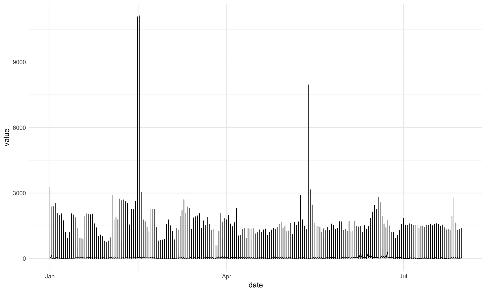

ggplot2
ggplot() is one of the most downloaded R packages and probably the one that bought Hadley to fame.
The “grammar of graphics” philosophy it supports not only lets you create professional looking plots, but once you have mastered its syntax should encourage you to think about plots in a more structured manner too.
The syntax does take time to master though, so do take time to check out the ggplot2 website and the ggplot2 cookbook which will walk you through common tasks. The author still refers to these!
Grammar rules
ggplot looks to break down a plot into various categories, that you can build up into a whole plot.
A brief explanation of the components are below:
- Data source - its easiest to use a tidy data source in long format
- Aesthetics - this specifies which variables in your data will vary and be plotted
- Coordinate systems - usually you’ll be in x-y, but polar and more exotic systems are possible
- Scales - How your variables map onto the coordinate system (e.g. a log scale)
- Statistics - Statistics applied to the data before plotting - most common is binning, such as for histograms, and smoothers such as trend lines
- Geoms - Geometric objects, the type of plot to produce. Line charts, bar charts, tiled plots etc.
Thinking about what you want to produce via the componenets above will get you to your desired plot quicker.
What plot to do?
Another great resource is the ggplot2 cheatsheet which groups geoms by the type of data you have.

Workflow
This example requires having a web_data data frame. You can either load up some sample data by completing the I/O Exercise (which is what is shown in the details below), or, if you have access to a Google Analytics account, you can use your own data by following the steps on the Google Analytics API page.
Once you have a web_data data frame to work with, the command head(web_data) should return a table that, at least structurally, looks something like this:
kable(head(web_data))| X | date | channelGrouping | deviceCategory | sessions | pageviews | entrances | bounces |
|---|---|---|---|---|---|---|---|
| 1 | 2016-01-01 | (Other) | desktop | 19 | 23 | 19 | 15 |
| 2 | 2016-01-01 | (Other) | mobile | 112 | 162 | 112 | 82 |
| 3 | 2016-01-01 | (Other) | tablet | 24 | 41 | 24 | 19 |
| 4 | 2016-01-01 | Direct | desktop | 133 | 423 | 133 | 61 |
| 5 | 2016-01-01 | Direct | mobile | 345 | 878 | 344 | 172 |
| 6 | 2016-01-01 | Direct | tablet | 126 | 237 | 126 | 77 |
Now, we can get to visualizing!
- First get your data ready and tidy. Whilst its possible to use “wide” data, I find it easiest to always start with tidy “long” data, so you can quickly repeat what you have learnt before.
## To date I have been using reshape2's melt() to make the long data:
library(reshape2)
web_data_long <- melt(web_data)
head(web_data_long)## date channelGrouping deviceCategory variable value
## 1 2016-01-01 (Other) desktop X 1
## 2 2016-01-01 (Other) mobile X 2
## 3 2016-01-01 (Other) tablet X 3
## 4 2016-01-01 Direct desktop X 4
## 5 2016-01-01 Direct mobile X 5
## 6 2016-01-01 Direct tablet X 6## But you should (and I) use the newer tidyr() package and use gather() instead:
library(tidyr)
## call the key column 'variable' and the value colum 'value' and
## gather all variables apart from date, channelGrouping and deviceCategory
web_data_tidy <- web_data %>% gather(variable, value, -date, -channelGrouping, -deviceCategory)
head(web_data_tidy)## date channelGrouping deviceCategory variable value
## 1 2016-01-01 (Other) desktop X 1
## 2 2016-01-01 (Other) mobile X 2
## 3 2016-01-01 (Other) tablet X 3
## 4 2016-01-01 Direct desktop X 4
## 5 2016-01-01 Direct mobile X 5
## 6 2016-01-01 Direct tablet X 6- Make sure all your columns are the right class. In this case, I make the date column a
Dateobject.
You could also choose to make factors out of your categories, as they let you set the order of colours in legends a bit easier.
str(web_data_tidy)## 'data.frame': 28660 obs. of 5 variables:
## $ date : chr "2016-01-01" "2016-01-01" "2016-01-01" "2016-01-01" ...
## $ channelGrouping: chr "(Other)" "(Other)" "(Other)" "Direct" ...
## $ deviceCategory : chr "desktop" "mobile" "tablet" "desktop" ...
## $ variable : chr "X" "X" "X" "X" ...
## $ value : int 1 2 3 4 5 6 7 8 9 10 ...web_data_tidy$date <- as.Date(web_data_tidy$date)
## we will only look at sessions
library(dplyr)
plot_data <- web_data_tidy %>% filter(variable == "sessions")- Start up a gg object with a
ggplot()call including your data, and any known aesthetics you want to apply to all plots. I tend to also set the theme here, favouring a minimal look usingtheme_minimal.
As we have made “long” tidy data, we know that our x variable will be date, but also our y variable will be in the value column, so we can set these as defaults in the aes() (aesthetics) call:
library(ggplot2)
## I don't know why, but I always call them gg
gg <- ggplot(data = plot_data, aes(x = date, y = value)) + theme_minimal()- Now the fun begins - experiment with adding various elements to your
ggobject using+. Once you have found something you want to keep, assign it toggand then carry on to the next feature.
Any aesthetics or statistics you haven’t specified in the global line, you will need to add in the geom you are adding. Note that because we have put the data in the first line, we don’t need to specify it again.
## let's make some line plots
gg + geom_line()
## hmm, too much data in there, let's colour by the channelGroupings
gg + geom_line(aes(colour = channelGrouping))
## we have desktop, mobile and tablet all in there, let's seperate them out with facet
gg + geom_line(aes(colour = channelGrouping)) + facet_grid(. ~ deviceCategory)
## I prefer it one over the other
gg + geom_line(aes(colour = channelGrouping)) + facet_grid(deviceCategory ~ .)## let's try an area plot
gg + geom_area(aes(colour = channelGrouping, group = channelGrouping)) + facet_grid(deviceCategory ~ .)## ahh, area plots colour by scale 'fill' rather than scale 'colour' (see ?geom_area)
gg + geom_area(aes(fill = channelGrouping, group = channelGrouping)) + facet_grid(deviceCategory ~ .)
## ok, let's keep that for now
gg <- gg + geom_area(aes(group = channelGrouping, fill = channelGrouping)) + facet_grid(deviceCategory ~ .)The point above is to show how modifications can be quickly added as you try out ideas.
A little more styling, and we are done with this example:
## make the colours nicer
gg <- gg + scale_fill_brewer(palette = "Blues")
## add a title
gg <- gg + ggtitle("Sessions per device category")
## rename the x and y axis
gg <- gg + xlab("Date") + ylab("Sessions")
## change the legend title
gg <- gg + guides(fill = guide_legend(title = "Channel Grouping"))
## put the legend at the bottom
gg <- gg + theme(legend.position = "bottom")
## print the final plot
gg
Disclaimer, I don’t think area plots are very clear but they look pretty ;)